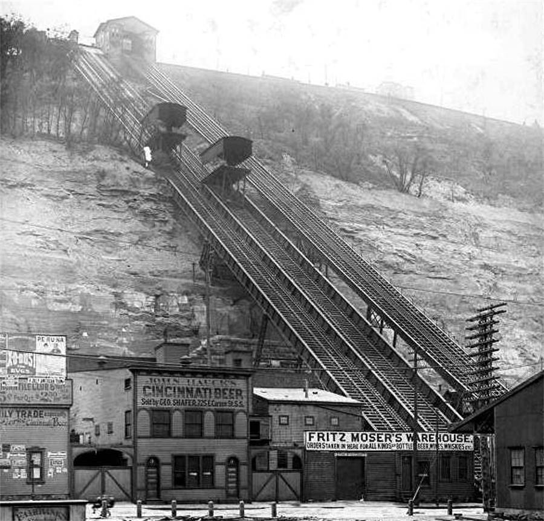
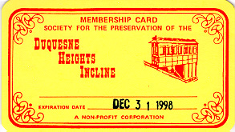

History
Ever wondered how a coal hoist transformed into a Pittsburgh icon? Back in 1854, newspapers announced the building of a hillside railway—one of several “inclines.” Over the decades, what began as a convenient way to transport coal evolved into a must-see landmark for residents and visitors alike. Despite early financial hurdles and multiple ownership changes, the Duquesne Incline continues to serve as a living piece of Pittsburgh's heritage.
In 1963, community efforts and philanthropic donations helped restore the incline, preserving its Victorian architecture and iconic wooden cable cars. Today, the Duquesne Incline remains a beloved symbol of Pittsburgh’s industrious spirit and enduring history.
Society for the Preservation of the Duquesne Heights Incline
In the mid-1960s, dedicated community members and local historians formed a neighborhood group that rescued and revitalized the Duquesne Incline. Officially organized as the Society for the Preservation of the Duquesne Heights Incline, this group continues to operate and maintain the incline for future generations.
Today, the Society works to balance tradition with modern needs, ensuring both visitors and locals can enjoy a safe and scenic ride. From fundraising events to volunteer opportunities, there are many ways to get involved and support the incline’s ongoing mission.
